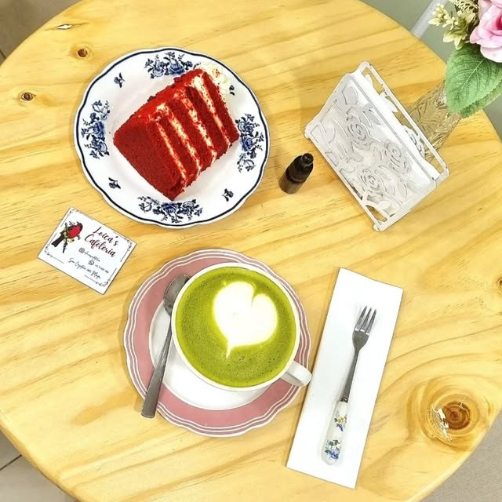
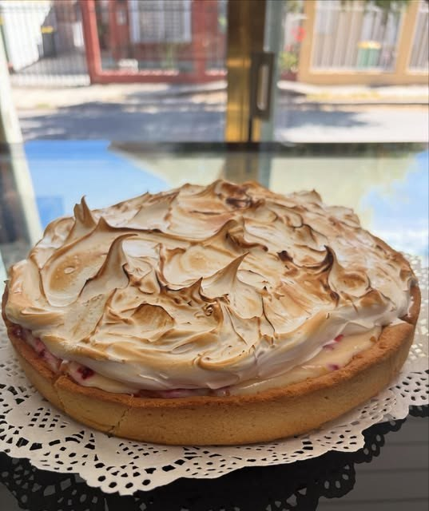
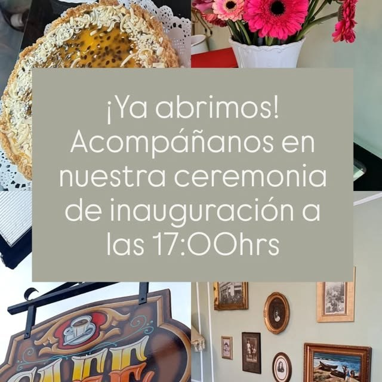
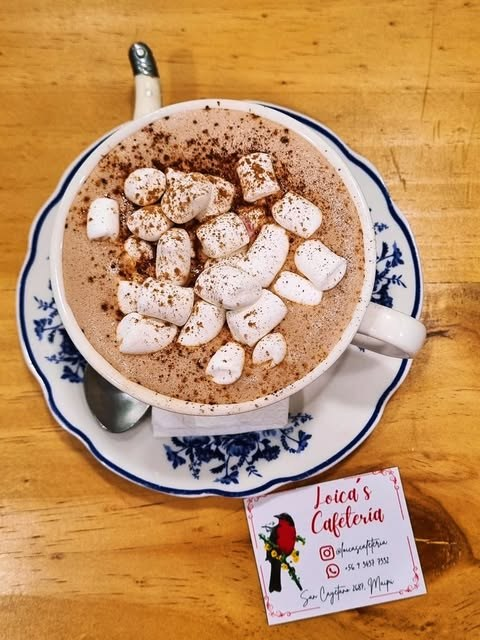

Tortas caseras
Red velvet y las tortas del día, servidas en loza vintage. "Torta" es de las palabras más repetidas en sus reseñas.

Cafetería · Tortas caseras · Maipú
Un lugar chiquitito y tranquilo en San Cayetano, con loza vintage, tortas caseras y café de verdad.
Red velvet y las tortas del día, servidas en loza vintage. "Torta" es de las palabras más repetidas en sus reseñas.
"El café es perfecto", dice una de sus reseñas. Y el matcha latte sale con arte en la espuma.
Sus clientes lo describen como acogedor, tranquilo y bien decorado. Un rincón para quedarse un rato.
La loica es ese pájaro chileno de pecho rojo encendido que se posa entre los campos. De ahí viene el nombre, y de ahí viene también el rojo que se repite en toda la cafetería.
Loica's es una cafetería de barrio en San Cayetano, Maipú: tortas caseras, café, matcha y loza de flores azules sobre mesas de madera clara. Con 4.8 estrellas en Google, lo que más repiten quienes la visitan es lo acogedor del lugar y lo rápida y atenta que es la atención.



Arma tu pedido y consúltanos. Un cliente comenta en Google que los precios van desde unos $1.500 hasta unos $8.000 — es su apreciación, no una lista oficial, así que conviene confirmar en el local.
"Es muy buen restaurante, la comida muy buena, las papas excelentes, el café es perfecto y la atención perfecta, y el ambiente es lo más cómodo y bonito y bien decorado. ¡Lo recomiendo mucho!"
"Lugar chiquitito pero hermoso y muy tranquilo, la comida es muy buena, el ambiente acogedor y la atención es muy rápida y atenta."
"¡Me encantó este lugar! Muy lindo y estético. 100% recomendado."
San Cayetano 2687
Maipú, Región Metropolitana
—